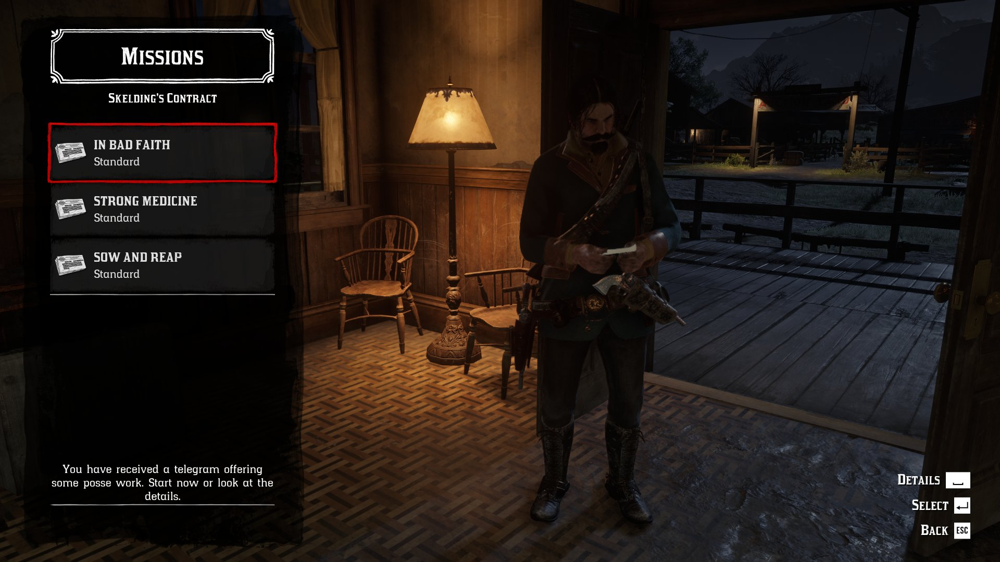
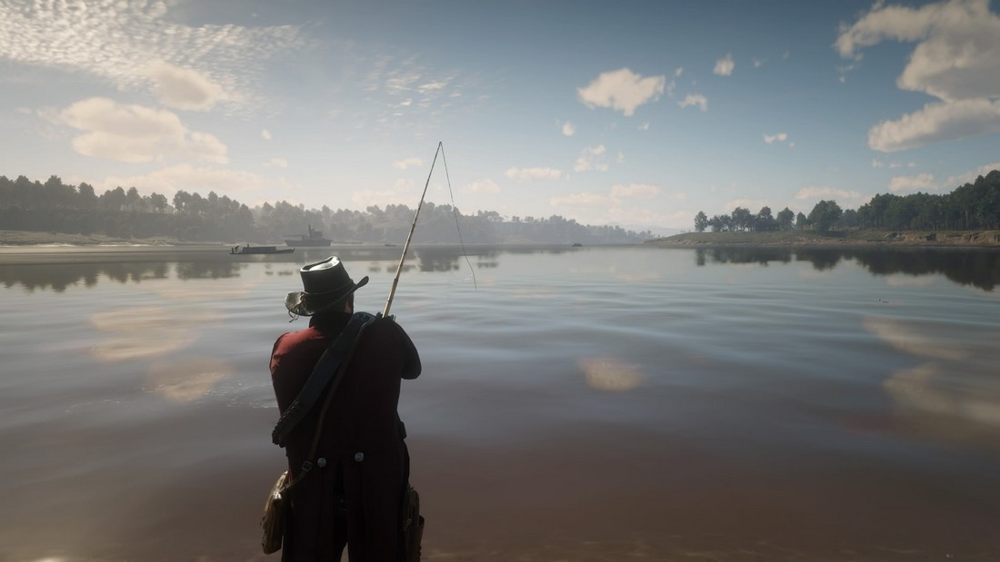

RED DEAD REDEMPTION 2 – ĐĨA GAME PS4
780.000
VND
Bảo đảm 100% chính hãng
- 2004'S Store chỉ làm việc trực tiếp với các thương hiệu và nhà phân phối chính thức
- 2004'S Store kiểm soát chặt chẽ quy trình hàng hóa được chấp thuận pháp giao dịch, nhập khẩu và khai thuế
- Hỗ trợ mua máy trả góp lãi xuất 0% qua thẻ tín dụng, nhanh hơn, tiết kiệm hơn
Red Dead Redemption 2 – Kỷ Nguyên Ngoài Vòng Pháp Luật
Đĩa PS4 Red Dead Redemption 2 là một câu chuyện phương Tây rộng lớn về lòng trung thành, niềm tin và cái giá phải trả của sự ô nhục, ghi lại sự sụp đổ không thể tránh khỏi của một nhóm hỗn tạp gồm những người nắm giữ miền Tây hoang dã đang chống lại sự tiến triển chậm chạp của nền văn minh và công nghiệp hóa.
Trò chơi lấy bối cảnh ở Thành phố Raccoon vào tháng 9 năm 1998, hai tháng sau các sự kiện của Resident Evil. Hầu hết các công dân đã bị biến thành những thây ma không có trí óc, do sự bùng phát của một loại vũ khí sinh học virus được gọi là T-virus, do Tập đoàn Umbrella sản xuất. Trò chơi bắt đầu tại một trạm xăng bên ngoài thành phố, nơi sĩ quan cảnh sát tập sự Leon S. Kennedy (Nick Apostolides lồng tiếng) gặp sinh viên đại học Claire Redfield (Stephanie Panisello lồng tiếng), người đang tìm kiếm anh trai Chris.
Lấy bối cảnh trong thế giới mở chân thực và sống động nhất từ trước đến nay của Rockstar, có rất nhiều việc phải làm, rất nhiều người để gặp gỡ và rất nhiều nơi để khám phá, thật choáng ngợp. Đĩa PS4 Red Dead Redemption 2 không chỉ là thành tựu lớn nhất của Rockstar cho đến nay; đó là một trò chơi thiếu sự thỏa hiệp nên thật khó để biết nên bắt đầu thảo luận về nó ở đâu là tốt nhất.
Thế giới trong Đĩa PS4 Red Dead Redemption 2
Một thế giới tuyệt vời; rộng hơn, đẹp hơn và đa dạng hơn so với cái mà chúng tôi đã khám phá trong Red Dead Redemption năm 2010 với một tỷ lệ lớn (mặc dù các phần của bản đồ của trò chơi đó cũng được bao gồm). Có những đỉnh núi phủ tuyết và những đầm lầy ẩm ướt, đầy cá sấu.
Gameplay của Resident Evil 2 Remake
Rừng rậm và cao nguyên rộng mở. Những ngôi nhà cổ kính và những đồn điền lớn. Dòng suối hẹp và hồ lớn. Những khe sâu bụi bặm và những hang động tối tăm. Có thị trấn chăn nuôi bùn lầy Valentine, với những tòa nhà bằng gỗ và nét quyến rũ mộc mạc
sau đó là thành phố Saint Denis hùng vĩ, một đô thị bụi bặm và đang phát triển với đầy những xa hoa hiện đại như xe điện, đường trải nhựa và nhà hàng Trung Quốc. Sự đa dạng của các hệ sinh thái và môi trường được kết hợp liền mạch với nhau ở đây không có gì đáng chú ý.
Red Dead Redemption 2 cũng thực hiện một công việc đặc biệt trong việc từ từ đưa ra lý do để ghé thăm mọi ngóc ngách trong thế giới rộng lớn của nó. Tôi vẫn được dẫn đến những khu vực trên bản đồ mà bạn chưa ghé thăm ngay cả trong giai đoạn kết thúc của cốt truyện chính kéo dài 60 giờ của Đĩa PS4 Red Dead Redemption 2
Bởi vì có rất nhiều lá bài được lưu giữ trong tay nên niềm vui khám phá những vùng đất mới của thế giới vẫn được duy trì xuyên suốt./p> 
Đĩa PS4 Red Dead Redemption 2 cũng thực hiện một công việc đặc biệt trong việc từ từ đưa ra lý do để ghé thăm mọi ngóc ngách trong thế giới rộng lớn của nó. Tôi vẫn được dẫn đến những khu vực trên bản đồ mà tôi chưa ghé thăm ngay cả trong giai đoạn kết thúc của cốt truyện chính kéo dài 60 giờ của nó. Bởi vì có rất nhiều lá bài được lưu giữ trong tay nên niềm vui khám phá những vùng đất mới của thế giới vẫn được duy trì xuyên suốt
Tốc độ của Đĩa PS4 Red Dead Redemption 2 chậm hơn so với GTA V chóng mặt hơn một chút cũng là một phần lý do khiến nó khuyến khích tôi uống tất cả những gì thế giới có. Các thi thể phải được cướp bằng tay và Arthur cần phải xử lý thi thể để làm điều đó. Súng ngắn tác dụng đơn cần phải được lên cò trước khi bắn. Súng Arthur hiện không mang theo cần phải lấy ra khỏi yên ngựa. Cà phê cần được pha trước khi uống.
Bản thân các nhiệm vụ chính của câu chuyện là sự kết hợp của những vụ cướp có mức cược cao, những cuộc đấu súng chết người, những cuộc giải cứu tuyệt vọng và những cuộc rượt đuổi gay cấn, xen lẫn với một danh sách dài các hoạt động khác.
Nhiều trong số đó hoạt động như những cách hữu cơ để dạy chúng ta về những công việc bận rộn và hoạt động mới có thể được thực hiện, từ việc bán ngựa ăn trộm đến chơi bài poker hoặc câu cá.
Không thể phủ nhận Đĩa PS4 Red Dead Redemption 2 là một game khá hay. Ánh sáng thật tuyệt vời, đặc biệt là trong những tình huống tối tăm, sương mù, nơi những tia ánh trăng chiếu xuyên qua những tán cây và tôi thích cách nó xử lý Arthur để những nội thất có ánh sáng yếu ớt ra ánh nắng tạm thời chói mắt bên ngoài.

Cảnh hoàng hôn đặc biệt ngoạn mục và dường như thay đổi tùy theo hệ thống thời tiết. Một số thì khắc nghiệt và rạng rỡ trong khi một số khác lại ấm áp và mềm mại. Hoạt hình khuôn mặt là một bước tiến đáng chú ý so với GTA V, và mức độ chi tiết đến mức gần như vô lý, từ cách vết máu chảy trên vai Arthur sau khi thực hiện một vụ giết người cho đến cách từng sợi sườn cừu hùng vĩ của anh run lên trong gió.
Cách bánh xe bị đóng bánh trong bùn. Cách rỉ sét tích tụ trên một khẩu súng được bảo trì kém. Đó là một danh sách dài khác nói lên mức độ chú ý cao đến từng chi tiết.
Chủ đề cốt truyện kết hợp hàng loạt hệ thống và cơ hội chơi trò chơi đáng kinh ngạc của Đĩa PS4 Red Dead Redemption 2 là câu chuyện nghiêm túc và nghiêm túc nhất của Rockstar cho đến nay và chắc chắn là câu chuyện được viết hay nhất.
Không cần thiết phải chơi Đĩa PS4 Red Dead Redemption 2 để đánh giá cao và hiểu những gì đang diễn ra ở đây, đặc biệt vì đây là câu chuyện tiền truyện diễn ra 12 năm trước, mặc dù tôi thấy rất bổ ích khi làm quen với cốt truyện lớn hơn vì nó kết nối với phần cuối cùng. số phận của van der Linde người Hà Lan bí ẩn.
Mối quan hệ của Arthur với nhân vật chính John Marston của Đĩa PS4 Red Dead Redemption 2 ở đây cũng đặc biệt hấp dẫn đối với tôi với tư cách là một fan hâm mộ của trò chơi năm 2010 và nó được xử lý rất tốt. Marston là một phần quan trọng của câu chuyện nhưng Rockstar đã đủ kiềm chế để không làm anh ta chú ý đến cái giá phải trả của Arthur.